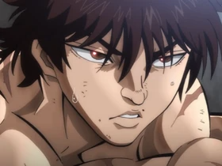
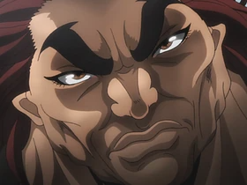
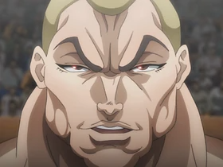
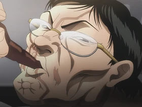
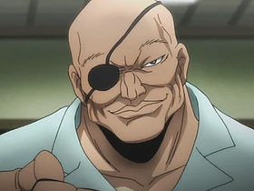
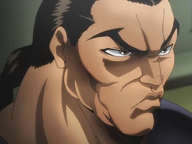
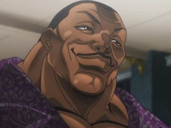

Personajes
Baki Hanma
Baki Hanma es el personaje principal y protagonista de la franquicia Baki the Grappler. A los trece años, decidió tomar su entrenamiento en sus propias manos para realizar un entrenamiento más intenso siguiendo los pasos de su padre. Más tarde pretende derrotarlo. Baki peleó por primera vez en la arena sin reglas a los quince años y se convirtió en su campeón. Es hijo de Yuujirou Hanma y Emi Akezawa y medio hermano de Jack Hanma.
Yuujirou Hanma
Yuujirou Hanma, es el padre de Baki y Jack Hanma. Es el principal antagonista de toda la franquicia de Baki. Yuujirou es el hijo de Yuuichirou Hanma y el personaje más fuerte de la serie hasta el momento. Yuujirou trabaja como mercenario y asesino independiente muy bien pagado para varios gobiernos y organizaciones. Se desconoce cuánto le pagan las personas u organizaciones por hacer su trabajo de mercenario, pero podemos asumir que es extremadamente alto. A menudo se le llama "la criatura más fuerte de la Tierra".
Jack Hanma
Jack Hanma es un personaje ficticio de la serie Baki the Grappler. Es un boxeador de Canadá e hijo de Yuujirou Hanma y Diane Neil, una agente canadiense de las Naciones Unidas a quien Yuujirou conoció durante la Guerra de Vietnam. Al igual que su hermano, Baki Hanma, desde la infancia ha deseado superar a su padre en fuerza y habilidad.
Kaoru Hanayama
Kaoru Hanayama es un personaje principal de la serie de anime y manga de Baki the Grappler. Es conocido como el Yakuza más fuerte de Japón y uno de los personajes más fuertes de la serie. Es el jefe de segunda generación del Grupo Hanayama. Tiene cicatrices de múltiples heridas en su cuerpo, y su tatuaje en toda la espalda parece un rompecabezas debido a las muchas cicatrices.
Doppo Orochi
Doppo Orochi es el décimo gran maestro de kárate y director de la escuela de kárate Shinshinkai, esposo de Natsue Orochi y padre adoptivo de Katsumi Orochi. Practicando artes marciales durante 50 años, es uno de los personajes más fuertes de la serie. También es el sensei de Kiyosumi Katou y Atsushi Suedou.
Kaiou Retsu
Kaiou Retsu es un personaje ficticio de la serie de anime y manga Baki the Grappler. Es un luchador muy consumado de Kenpo chino y amigo de Katsumi Orochi. Al principio, era un antagonista de la serie, pero luego se convirtió en uno de los personajes principales. Su verdadero nombre es Eishuu Retsu.
Biscuit Oliva
Biscuit Oliva, es un personaje ficticio de la serie de anime y manga de Baki the Grappler. Un asesino que trabaja para el gobierno de los EE. UU. Además de ser un carcelero especial en la prisión estatal de Arizona. Posee un cuerpo de hierro y es casi invulnerable a cualquier cosa. También es conocido como el Sr. Desencadenado.
